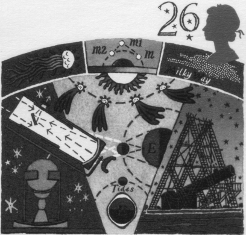
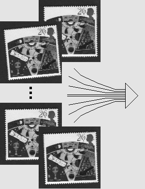
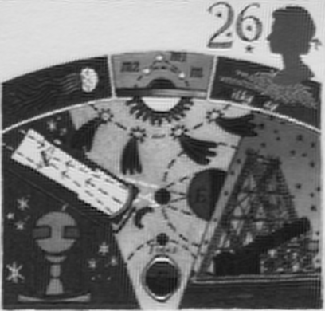

|
Super-Resolution from Multiple Input Images (De-Aliasing)
It is possible to use multiple low resolution images of the same object to generate one single high resolution image of that object. This is especially useful in forensic image analysis where you have multiple still frames of video of a suspect or car licence plate (e.g. from CCTV) and you need to see more detail.
This type of super-resolution can only be achieved if 2 preconditions are met, namely:
1. Each of the low resolution images has some kind of motion relative to all the others. 'Motion' includes, shift, scale, rotation and focus differences. If all the images are exactly the same apart from noise content then all you will get it a less noisy image with no added resolution information.
2. The low resolution input images must be captured using optics which project a higher resolution image onto the sensor. In other words, you can't use this method to beat the 'limit of resolution' of the camera lens - it's only good for de-aliasing.
In general, the more input images you have and the greater the 'motion' they portray, the more resolution recovery can be theoretically extracted from them. The method starts simple but can get very complex. In essence you first register all the low resolution images to sub-pixel accuracy (the more accurate your registration, the more of the available super-resolution you can reclaim). The pixels of the input image are then projected onto a finer grid using these registration parameters to form an initial super-resolved image. This is what the NASA group call a 'Mixel grid' (Cheeseman P., Kanefsky B., Kraft R. and Stutz J. NASA Ames Research Center Internal Technical Report FIA-94-12, December 14 1994). This initial estimate is actually a blurred version of the fully super-resolved image so there must follow an un-blurring step (which I do with deconvolution but others use other methods).
Two experiments are shown below. They use the Biaram programs Autoreg, Alignlist, Geomlist, Deconvolve, Genav, MkPlain, ZStdise, Ewin, Border, Scale, SRMixel and SRDecon. The first uses, as input, 32 scanned images of a UK postage stamp. The input images were scanned at 75 dpi and the super-resolved result attempts to reconstruct a 300dpi image. The second example uses 30 low resolution images of a library.
28.02.2008
| Stamp (ground truth): a 300 dpi original scan. Compare this to the super-resolved reconstruction shown below. (A ground truth image for the 'Car/Library' dataset is not available.) |
| a)  |
| Stamp (results 1): Four of the 32 input images are shown on the left, the super-resolved result is shown on the right. |
  |
| Stamp (results 2): Compare the blown up-version of one of the input images (left) with the super-resolved image (right). There is significant resolution recovery. However, the resolution is not quite upto the 300dpi attempted. This is partly because the method I used here is an approximation to the optimum procedure with spatially invariant PSF deconvolution. |
|
| Library (results): One of the 30 input images is shown (magnified) on the left, the super-resolved result is shown on the right. In this method I use a more accurate version of my algorithm with spatially variant PSF deconvolution. Note the detailed brick-work. |
 
The input images used for this experiment are from the 'Car/Library' dataset of Barbara Levienaise-Obadia, Dept. Electrical and Electronic Engineering, University of Surrey, UK. They can be downloaded for you to try and compare your own methods of super-resolution de-aliasing. I downloaded them from the Oxford University Visual Geometry Group's web site. If you want to compare my result to theirs, see this PowerPoint presentation. |
|


 Dr P. J. Tadrous 2000-2026
Dr P. J. Tadrous 2000-2026